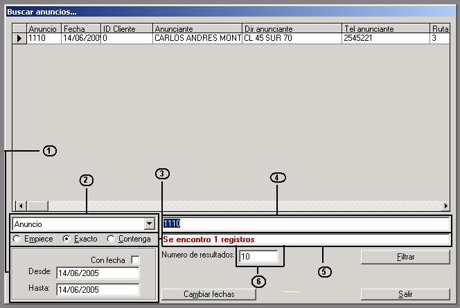

|
Este modulo no es mas que un visor por criterios
le la información de anuncios, su utilización es relativamente
sencilla, basta con ingresar los criterios de filtro y lo que deseamos
buscar.

Pasos para buscar o filtrar
anuncios:
1- Seleccionamos del combo por cual
criterio queremos filtrar (Recuadro marcado con el numero 2)
2- Marcamos una de las 3 opciones
del recuadro 3, dependiendo de que porción de la información
conocemos, por ejemplo si solo se sabe tres números del anuncio,
selecciona la opción "Contenga" y en la grilla de resultados
aparecen todos los anuncios que contengan estos números.
3- Si deseamos que solo aparezcan
resultados de un rango de fecha especifica, marcamos la casilla de verificación
llamada "Con fecha" y los resultados solo saldrán en el
rango de fecha que selecciono.
4- En el cuadro de texto marcado con
el numero 4 ingresamos los datos que tenemos para realizar la búsqueda
y presionamos en el botón "Filtrar".
Cuando el sistema termina la búsqueda,
en el cuadro de texto marcado con el 5 aparece el numero de registros
que se encontraron.
Nota: En este cuadro de texto
digitamos el numero de registros que deseamos que aparezca de la búsqueda.
|